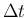
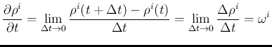

| Автор: Н.Ф. Сорокин | |||
Известно, что системы управления работающие в условиях многомерного пространства зачастую имеют большое количество перекрёстных связей между каналами управления. Это объясняется тем, органы управления таких систем обычно связаны с самим объектом управления и эффект оказываемый ими на параметры объекта управления зависит от его текущего состояния.
Вместе с тем скалярные каналы управления не являются естественными для объекта управления, поскольку построенная в терминах скалярных каналов система сильно зависит от выбора этих самых каналов и может работать только в ограниченном множестве линеаризованных режимов.
Для разрешения этой проблемы имеет смысл перейти к рассмотрению построения систем уравления в терминах объектов имеющих завершенный физико-геометрический смысл, то есть в терминах тензоров. Это не в коей мере не означает, что из уравнений стабилизации куда-либо денуться скалярные компоненты, но все они будут подчинены соответствующим тензорам, а следовательно выбор конкретной системы координат для расчета не будет влиять на динамику системы в целом.
Преимущество перехода к тензорному исчислению состоит в том, что многие перекрёстные связи, оказываются на самом деле всего-лишь следствием линейных преобразований над векторными/тензорными величинами. При переходе к тензорному исчислению такие перекрёстные связи естественным образом исключаются из системы уравнений и оказываются частью операций более высокого уровня, а именно операций над тензорами. Поскольку, в рамках анализа систем управления, работающих с тензорными сигналами, вопрос устойчивости также должен решаться на уровне тензоров, такие перекрёстные связями будут учтены в общем порядке. Тензорный вид уравнений движения и системы стабилизации снижает объёмность выкладок и является естественным для реализации в виде програмного кода.
Отдельно стоит отметить, что использование векторных моторов и прочих параметров, объединяющих линейные и угловые параметры общей физической природы также уменьшает количество перекрестных связей в системе, поскольку эти компоненты часто оказываются взаимозависимыми при переходах между системами координат, а потому имеет смысл в качестве тензорных сигналов использовать именно такие, объединенные пары угловых и линейных параметров.
К таким объектам относятся роботы-манипуляторы, дроны, некоторые виды автомашин, шагающие роботы. Данная статья посвящена математическому формализму обобщающему задачи управления этими и другими групами ОУ.
Хочеться отметить интересное свойство СУ, работающих с тензорными сигналами. Некоторые задачи управления, которые мы можем сформулировать в трехмерном пространстве имеют прямые аналоги в пространстве двумерном. В терминах тензоров системы управления, решающие эти две задачи будут очень похожи друг на друга, что выражается в эквивалентности структурных схем СУ. Тоесть, фактически, оказывается возможным построение системы управления независимой от мерности пространства задачи. Поскольку практически важные задачи ограничены двумерным и трёхмерным пространствами (а также одномерным в вырожденном случае), врядли это наблюдение может иметь значимые практические следствия, но является интересным с теоретической точки зрения.
Особенностью тензорного сигнала является множественность его возможных представлений вплоть до того, что в различных частях системы управления один и тот же тензорный сигнал может быть представлен разным набором компонент (так например, тензор угловой ориентации может быть представлен матрицей поворота, кватернионом или вектором наименьшего поворота и при этом эти формы могут быть заданы в различных базисах). Выбор компонентного представления в вычислительной системе не влияет на динамические свойства системы, поскольку операции над тензорами эквивалентны во всех системах координат. Вместе с тем, для построения системы управления в терминах тензоров следует учитывать, что операции над тензорными сигналами производятся с учетом их геометрической природы и должны, при необходимости, выполнятся с правильными преобразованиями компонентных представлений (и базисов систем координат компонентных представлений). Поскольку не все тензорные уравнения являются линейными, для замыкания цепей систем управления следует использовать такие компонентные представления тензорных сигналов, которые дают наилучшую линейность с замыкаемыми по ним параметрами. Это позволяет добиться наилучшего качества управления и предсказуемости поведения системы.
В зависимости от природы тензорного сигнала, он может иметь разные алгебраические свойства. Тензорный сигнал считается линейным, если, он допускает выполнения операций сложения, вычитания, умножения на скаляр и линейный тензорный оператор. Для линейных тензорных сигналов однозначно определены тензор производной и тензор первообразной.
Другие типы тензорных сигналов могут иметь иные алгебраические свойства. Так, например, тензор ориентации не обладает свойством аддитивности, но, зато относительно него определена операция композиции. Композиция имеет некоторые свойства операции сложения, но не обладает свойством коммутативности. Важное практическое значение в ТАУ имеет дифференцирование и интегрирование сигналов. Поскольку нелинейные тензорные сигналы в общем случае не могут быть продифференцированы в компонентном представлении, для построения систем управления с такими сигналами введем понятие линеаризованной производной тензорного сигнала.
Линеаризованной производной тензорного сигнала по параметру будем называть тензорный сигнал , для которого существует компонентное представление численно равное локальной производной по параметру t некоего компонентного представления и при этом не зависящее от компонент . Такой сигнал также является тензором и существует как геометрическая сущность независимо от тензорного сигнала .
Введение линеаризованной производной необходимо для того, чтобы иметь возможность проводить операцию дифференцирования тензора без указания конкретного компонентного представления и системы координат. По построению, вне зависимости от текущих координат , тензор в представлении всегда будет линеен по отношениюю к тензору в представлении , а следовательно вне зависимости от выбранного режима будет одинакого входить в уравнения всех линеаризованных режимов.
Докажем, что тензор угловой скорости является линеаризованной производной тензора ориентации в изложенном выше смысле.
Рассмотрим движущийся объект в базисе собственной системы координат. Рассмотрим положение базиса через малый промежуток времени . Запишем тензор ориентации объекта в компонентной форме через вектора кратчайшего поворота. Полная производная вектора поворота и сам вектор поворота всегда будут равны нулю.
| (1) |
| (2) |
Однако, локальная производная в мгновенном базисе будет отлична от нуля:
|  | (3) |
Суммирование компонент вектора поворота возможно в силу колинеарности нулевого вектора ( ) любому другому вектору и тому обстоятельству, что повороты по колинеарным векторам образуют группу.
Поскольку, вне зависимости от текущей ориентации объекта мы всегда можем записать его движение в собственном мгновенном базисе и получить его производную в форме независимой от параметров ориентации, тензор  является линеаризованной производной тензора ориентации.
является линеаризованной производной тензора ориентации.
Альтернативное доказательство можно провести из уравнения связывающего производную вектора поворота с вектором угловой скорости.
| (4) |
| (5) |
Поскольку всегда существует компонентное представление в котором , а локальная производная вектора поворота равна , то , не зависящий от является линеаризованной производной тензора ориентации.
Операция нахождения первообразной есть операция обратная нахождению производной сигнала. В случае если мы имеем дело с линейным векторным сигналом, операция поиска первообразной сводится к интегрированию компонет входного сигнала в каком-либо неизменном базисе, но в общем случае, для нелинейных сигналов, поиск первообразной есть нетривиальная операция, а смысл ее зависит от конкретной природы сигнала (как например, в случае с ориентацией и угловой скоростью, где первообразная определяется через композицию мгновенных поворотов). Невозможность построить первообразную без знания природы сигнала объяняется тем, что при нахождении линейной производной для нелинейных сигналов происходит потеря информации. Приближенное численное восстановление первообразной сигнала возможно по алгоритму приращение-коррекция. Однако, на практике, в ТАУ интегрирование сигналов происходит в области малых отклонений, тоесть в условии, когда приращения довольно точно передают характер поведения производной, а потому, вместо первообразной допустимо использовать интеграл компонентного представления входного тензорного сигнала.
Такой интеграл будем называть интегралом тензорного сигнала по компонентному представлению или линеаризованным интегралом.
Следует учесть, что накапливаемый в вычислительной машине интеграл тензорного сигнала также является тензором, а потому при переходе компонентного представления в другую систему отсчета, интеграл должен пересчитываться соответственно.
Структурные схемы, описывающие сигналы в тензорной форме имеют свои особенности. В частности многие коэффициенты на них являются тензорными, а сигнал ошибки углового положения (контроль положения типичен для систем интересующего нас класса) вычисляется не с помощью разности а согласно процедуры обратной композиции.
Пусть U - линейный оператор уставки углового положения. X - линейный оператор текущего углового положения, а E - линейный оператор относительной ошибки. Тогда
| (6) |
Отсюда
| (7) |
Несмотря на то, что обратная композиция не является сложением, при линеаризации в любом из возможных режимов обратная композиция в первом приближении в области малых отклонений будет вести себя как разность .
В общем случае, до тех пор, пока мы рассматриваем области малых отклонений, возможно проанализировать систему как многомерную линейную системой управления, что позволяет рассматривать вопросы устойчивости и прочие связанные проблемы известными методами.
Следует заметить, что, если все операции тензорной СУ удалось свести к действиям над линейными операторами, то по её структурной схеме можно восстановить структурную схему любого частного опорного режима.
Подробное рассмотрение вопроса устойчивости СУ с тензорными сигналами в общем виде выходит за рамки настоящей статьи.
Невозможность создать такое управляющее воздействие одним органом управления очевидно разрешается при использовании нескольких совместно действующих органов управления.
Группой органов управления будем называть совокупность органов управления, совместно решающих задачу построения тензора управления U в виде , где - количество органов управления. Если относительно управляющих воздействий органов управления выполняется принцип суперпозиции, то U является линейной комбинацией.
| (8) |
| (9) |
| (10) |
Уравнение () есть система линейных уравнений к решению которой сводится задача поиска управляюющего воздействия отдельных органов группы. Система () может иметь одно решение, не иметь решений вовсе или же иметь множество решений.
Случай отсутствия решений означает, что желаемое управление, требуемое от группы не может быть выполненно (вероятно, в силу физической несовместимости).
Случай множества решений означает, что желаемое управление может быть достигнуто множеством способов. Поиск одного из множества решений возможен с использованием метода псевдообратной матрицы, однако вероятно, разработчик СУ захочит задать правила выбора конкретного решения из доступного множества.
Поиск оптимального решения на данном множестве требует введения функционала оптимизации и, возможно, дополнительных условий.
| (11) |
| (12) |
| (13) |
Если F(V) - квадратичный функционал, а дополнительные условия отсутствуют, задача () является задачей квадратичного программирования и может быть разрешена в форме:
| (14) |
Как было сказано выше, уравнение в форме () может быть записано, если относительно воздействия органов управления выполняется принцип суперпозиции.
Матрица A есть матрица частных производных .
Практически значимыми примерами групп органов управления являются системы с суперпозицией силовых и мгновенных кинематических воздействий. Для них матрица А формируется из компонент линейного оператора переноса соответствующего воздействия:
Силовой перенос. Кинематический перенос.
Из формы операторов переноса следует, что линейные и угловые параметры при построении желаемого управления должны рассматриваться совместно. Такой подход свойственнен для винтового исчисления / исчисления векторных моторов. Следует отметить, что векторный мотор является тензором и к нему применимо всё, описанное в предыдущих разделах.
Вычислим ее (учитывая, что R - линейный оператор):
| (15) |
| (16) |
Второе слагаемое в этом уравнении отвечает за неучтенный сигнал миграции управляющего воздействия.